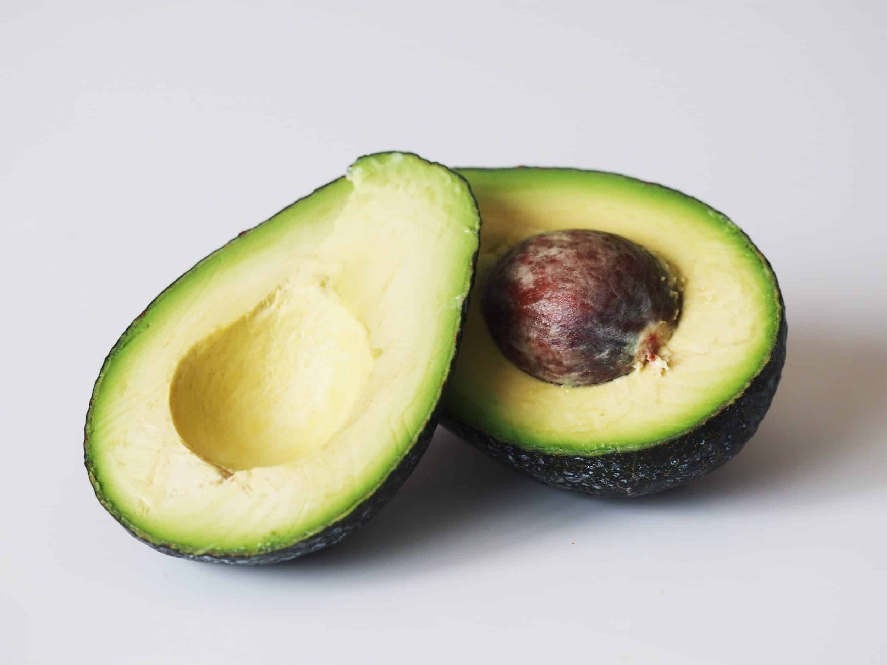
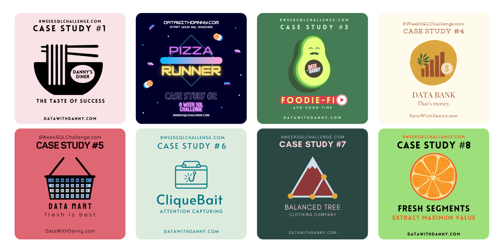

In this project, I created a Wine Recommender to simply the process of choosing wines for beginners. Machine Learning classification techniques such as Random Forest, XGBoost and Neural Network were used to help predict the type of wine most suitable for users based on their tastes and preferences.
In order to simulate the constraint of not having access to all wines in the world, recommendations were given based on a hypothetical wine catalogue.

In this project, my team and I created a web application using RShiny called GoWhereSia.
GoWhereSia aims to be the all-in-one application that contains all travel related information such as food and attraction options, crowd level, weather and news.

In this project, I used PostgreSQL to explore the coffeeshop database to better understand it.

This holds all of my Tableau Dashboards. They include dashboards I have done based on datasets obtained online.

In this project, I seek to advise a mock client, GreenGrocer in deciding if it is worthy to penetrate the Avocado industry. Thereafter, assist them in deciding which type of Avocado as well as which regions to set up shop in order to gain the maximum revenue.

In this project, I used MongoDB Compass to explore the sample AirBnB dataset provided in it.
In this project, I seek to find out the best day to invest in a stock using Vanguard 500 Index Fund ETF (VOO) data obtained from Yahoo Finance.

In this project, I scraped movie data from IMDB for further analysis as well as to explore new libraries such as BeautifulSoup.
In this project, I explored Machine Learning regression techniques to predict the delivery duration for food delivery. Models used were Multiple Linear Regression, Random Forest Regression, Gradient Boosting Regression and Neural Network Regression. This project aimed to gain familarity and exposure to regression models and conduct an end-to-end data science project.

In this project, I explored Machine Learning classification techniques to predict the delivery duration for food delivery. Models used were Logistic Regression, Light Gradient Boosting Machine (LightGBM) , Gradient Boosting Regression and Neural Network Regression. This project aimed to gain familarity and exposure to classfication models and conduct an end-to-end data science project.

In this project, I attempted 8 case studies from the #8WeekSQLChallenge by Data with Danny. It will showcase my ability to tackle various SQL challenges as well as demonstrate my proficiency in SQL query writing and problem-solving skills.